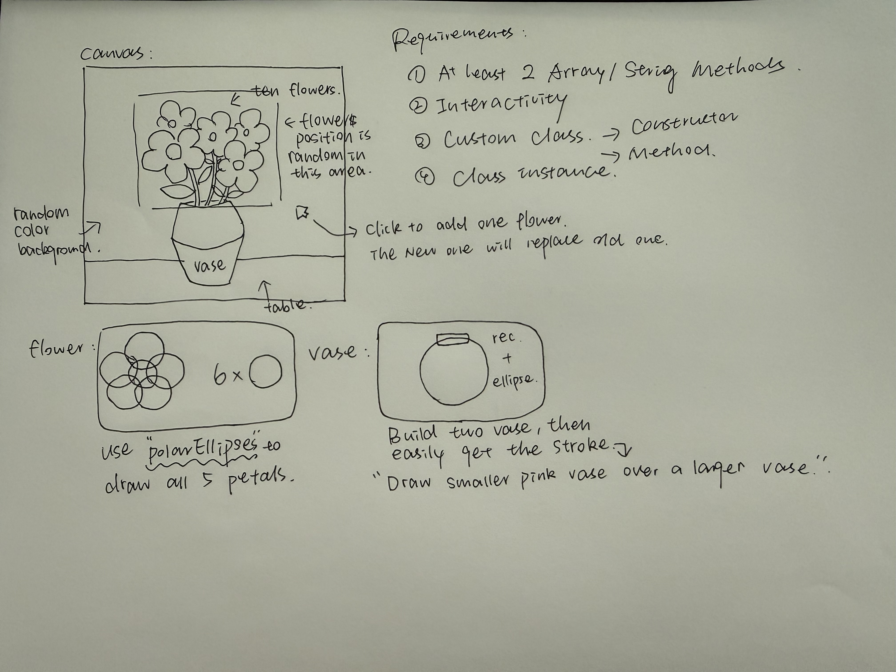
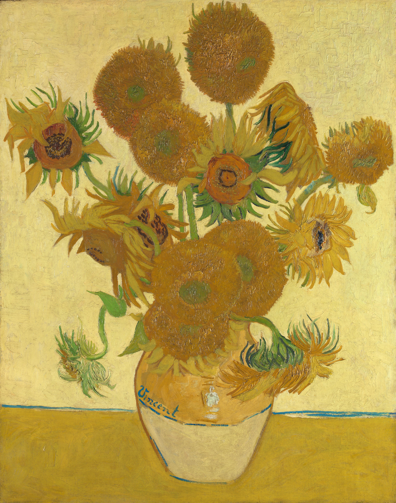
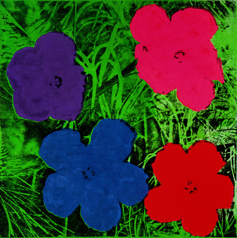

One More Flower is an interactive flower bouquet made with p5.js. I wanted people to build a bouquet by clicking. The sketch starts with a blue background, a table, and an empty pink vase. Each click adds one flower and picks a background color from ten blues. Each flower has a random position and size within a set range, and its color is picked from ten colors. I kept five petals for every flower to keep the drawing simple.
I use an array called flowers to store the flower objects. Each click adds a new flower to the end with push(). When there are more than ten flowers, shift() removes the oldest one. The first ten clicks build up the bouquet. After that, each new flower replaces the oldest flower. This changes both the array and what appears on the canvas. I draw the flowers from oldest to newest, so new flowers can cover older ones.
I made a custom Flower class with a constructor() and a display() method. The constructor sets each flower's position, size, color, and stem starting point. These values stay the same after the flower is created, so the flowers do not keep moving or changing color. The display() method draws the stem, petals, and center. Each click creates a new instance with new Flower() and adds it to the array. A for loop then calls display() for each flower.
I use the p5.Polar library we learned in class and its polarEllipses() function to draw five round petals. It spaces the petals evenly around the flower center. I use translate() to move the drawing origin to each flower, with push() and pop() to save and restore the drawing settings. I draw the center with circle(), the stem with line(), and the vase with rectangles and ellipses. The flower heads stay in an area above the vase, and the stems connect them to the inside of the vase. I draw the vase last to hide the bottom of the stems. I wanted each click to make a small change to the picture.


